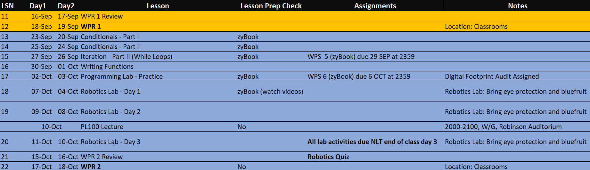

Writing Functions
CPT Sonny Bhatia
Monday, September 30, 2024
Announcements
Discussion!
- Interactive Python Notebooks!
- Meanwhile, trying to learn a language…
Lesson Objectives
- Explain functions and the advantages for using functions in programming
- Identify variable scope in different code segments
- Write a function that returns a value or values
What is a function?
- statements that belong together
- perform a specific task
- take arguments; return output
- can be reused multiple times
But why?
- Reusability: write once, use many times
- Modularity: break down complex problems into smaller, manageable parts
- Readability: easier to understand
- Scoping: variables stay within function
Types of Functions
Fruitful functions
- Functions that return a value
- Perform calculations
- Example:
int(),math.sqrt() - You can write your own!
Procedures
- Do not return a value
- Perform a series of actions
- Example:
print(),list.append() - You can write your own!
Defining functions
- Header
- begins with
def, ends with: - name, just like a variable
- arguments
- begins with
- Body = code block
- one or more Python statements
- indented the same amount!!
return= what is generated- immediately exits the function
def is_prime(n):
if n < 2:
return False
for i in range(2, n):
if n % i == 0:
return False
return True- 1
- Function header
- 2
-
First
returnstatement based on a condition - 3
-
Second
returnstatement within a loop based on another condition - 4
-
Final
returnstatement only reached if no other conditions are met
Using functions
- Call or invoke the function
- Pass input as arguments
- Capture returned value in a variable
Example: Is Prime Number?
- Notebook
is_prime()repeated- How does it work?
Variable Scope
- Scope: where a variable is accessible
- Local variables: declared inside a function
- What happens within a function…
- Global variables: declared outside a function
- Use
globalkeyword to access it - avoid this!
- Use
main()function provides a context- keeps your variables local and code organized
def pow(b, p):
y = b**p
return y
def square(x):
a = pow(x, 2)
return a
def main():
a = 7
b = 11
p = square(a)
print(a, b, p, y)- 1
-
ydefined inpow() - 2
-
adefined insquare() - 3
-
unrelated to the
ainsquare() - 4
-
unrelated to the
binpow() - 5
-
this
pdoes not affectpow()orsquare() - 6
-
yis not defined in this scope!
Example: Exponents
- Notebook
- What is broken?
- Why?
In-Class Exercise 1: Code Tracing
- Python Tutor
- Trace the flow!
- Use the flowchart below.
In-Class Exercise 2: Factorial
- Notebook
- Update
factorial()
In-Class Exercise 3: Combination Count
\({}^nC_k\) denotes the number of ways to choose \(k\) items from a set of \(n\) items. For example, if you have red, green, blue, and yellow marbles and you want to choose two of them, there are six possible combinations: red-green, red-blue, red-yellow, green-blue, green-yellow, and blue-yellow.
\({}^nC_k\) is calculated using the formula:
\[{}^nC_k = \frac{n!}{k!(n-k)!}\]
Write a function n_choose_k() that takes two integers, n and k as its two parameters. Your function should return the value of \({}^nC_k\).
Hint: Use the
factorial()function that you just wrote!
Reminders
Next Lesson
- Programming Lab
- Choose your own adventure!
- Come prepared with questions!
- WPS due on Sunday!